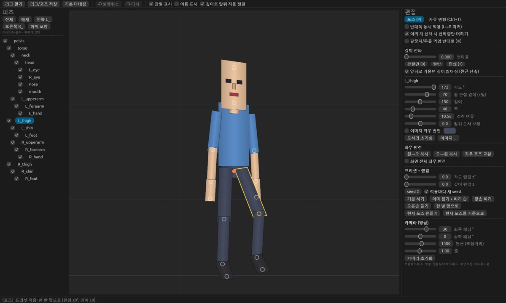

Puppet2D 2D 컷아웃 퍼펫
관절마다 큰 조각으로 나눈 2D 인형을 마우스로 움직여 포즈를 잡는 데스크톱 툴입니다. 3D 모델 없이 2D 각도와 깊이값만으로 움직이고, 앞/뒤 깊이에 따라 조각 크기와 원근이 자동으로 바뀝니다. (Rust + egui, Windows)

주요 기능
- IK 드래그 — 손·발 끝 관절을 끌면 손목·팔꿈치·어깨가 따라옵니다. 조각 몸통을 끌면 그 부위만 회전.
- 관절별 깊이와 원근 — 마우스 휠로 앞/뒤 깊이 조절. 한쪽 끝만 앞으로 나오면 사다리꼴로 커지고, 기울면 길이가 짧아집니다(원근 단축).
- 깊이 전파율 — 관절만 움직일지, 아래 파츠 전체가 같이 따라올지 0~1 사이로 조절.
- 카메라 앵글 — 우클릭 드래그로 좌우/상하 패닝, 줌. 깊이에 따라 앞뒤 순서 자동 정렬.
- 자유 변형 (Ctrl+T) — 조각이나 여러 부위(예: 눈코입)를 한 박스로 이동·왜곡·원근 변형.
- 프리셋 + 랜덤 — 기본 서기, 한 발 앞으로 등 포즈 프리셋과 각도·깊이 랜덤 흔들기.
- 포즈 JSON · 스틸 내보내기 — AI가 쓴 포즈 JSON을 불러와 손으로 다듬고, 원하는 범위를 PNG로 저장. 창 없이 CLI로도 렌더링됩니다.
기본 조작
| 부위 선택 | 클릭 (Ctrl/Shift+클릭 = 여러 개) |
| 손·발 끝으로 끌기 | 관절 원(○) 드래그 |
| 앞/뒤 깊이 | 조각 위에서 마우스 휠 |
| 카메라 | 우클릭 드래그 = 앵글, Ctrl+휠 = 줌 |
| 실행취소 | Ctrl+Z / Ctrl+Y |